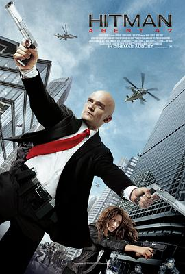

代号47 / Hitman: Agent 47
又名：刺客特攻47(港) / 刺客任务: 杀手47(台) / 杀手：代号47
完全没有游戏的精髓，全程基本上都是枪战，除了发动机库那一段有点意思。另外这个皮下钛合金电都电不坏的有点强行下一部的感觉。
作品信息
| 导演 | 亚历山大·巴赫 |
| 编剧 | 斯基普·伍兹 / 迈克尔·芬奇 / Morten Iversen / Peter Gjellerup Koch |
| 主演 | 鲁伯特·弗兰德 / 汉娜·韦尔 / 扎克瑞·昆图 / 塞伦·希德 / 托马斯·克莱舒曼 / 杨颖 / 丹·巴克达尔 / 迈克尔·博恩哈特 / Nils Brunkhorst / 米凯拉·卡斯帕 / 杰瑞·霍夫曼 / 塞巴斯蒂安·胡克 / 罗夫·凯尼斯 / 海伦娜·皮斯克 / 尤尔根·普洛斯诺 / 埃斯金迪尔·特斯法 / 许优美 / 兰斯·埃明格 / 理查德·艾沃特 / William E. Morris / 埃米里奥·瑞弗拉 / 吉莉安·谭 / 克里斯·泰辛格 |
| 类型 | 动作 / 惊悚 / 犯罪 |
| 制片国家/地区 | 美国 / 英国 / 德国 / 加拿大 |
| 语言 | 英语 |
| 上映日期 | 2015-08-21(美国) |
| 片长 | 96分钟 |
| IMDb | tt2679042 |
说过什么
2025-02-20 07:19:55
看过 · 时间来自广播，短评来自标记页
完全没有游戏的精髓，全程基本上都是枪战，除了发动机库那一段有点意思。另外这个皮下钛合金电都电不坏的有点强行下一部的感觉。
2025-02-13 17:58:46
广播 · 想看
最后一次看到是 2026-08-01T11:04:10+10:00 · 豆瓣原页